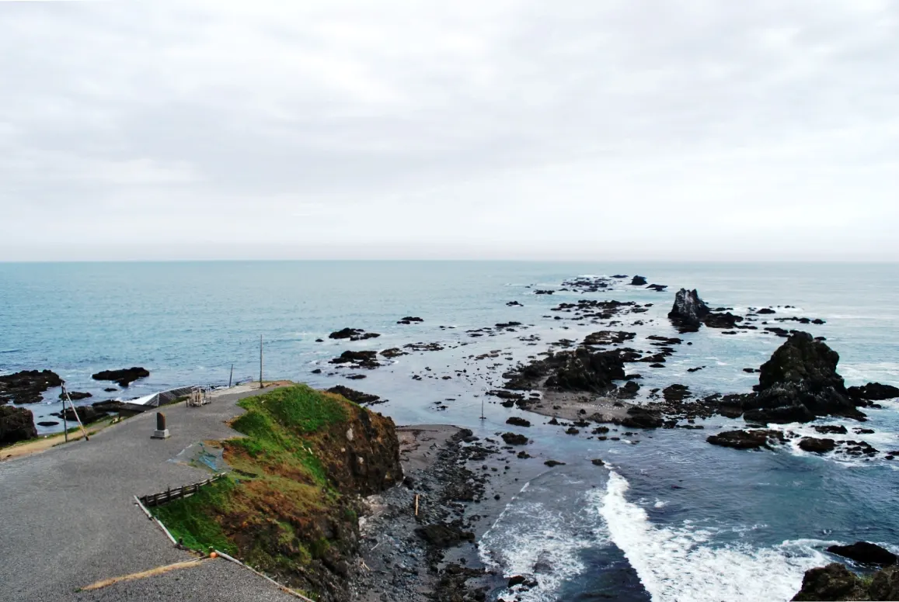
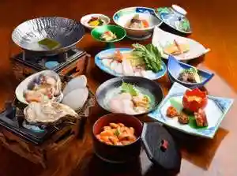
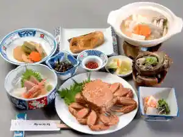
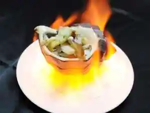
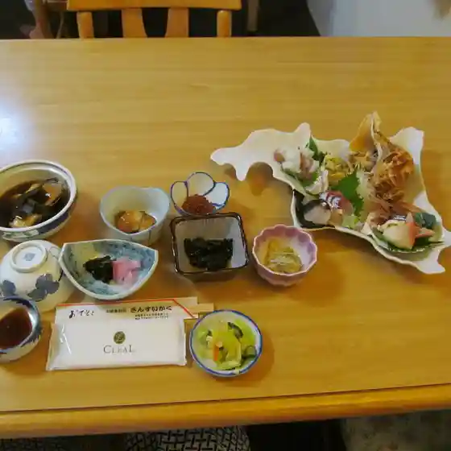
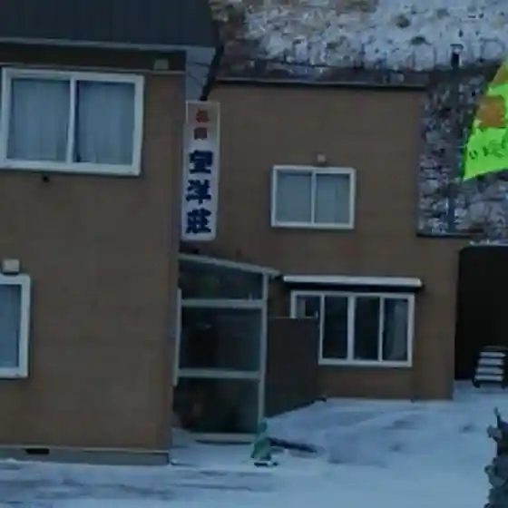
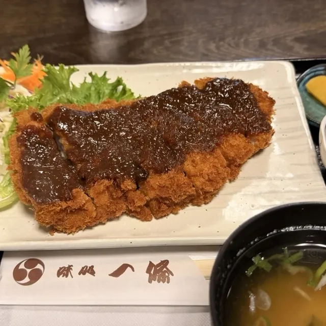
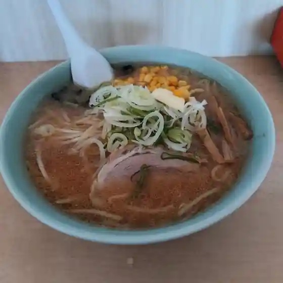
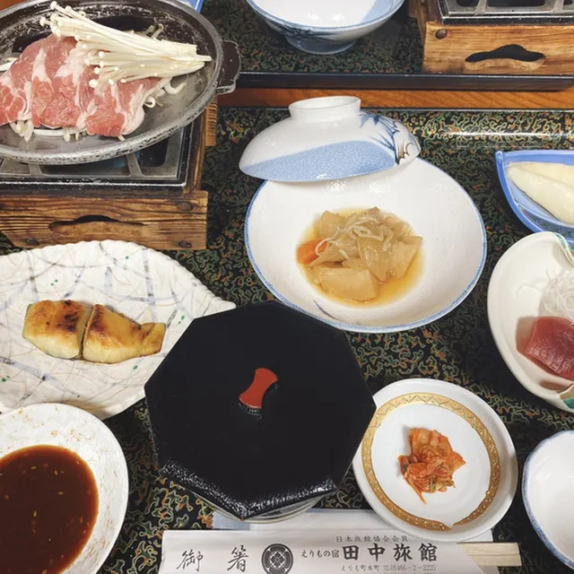
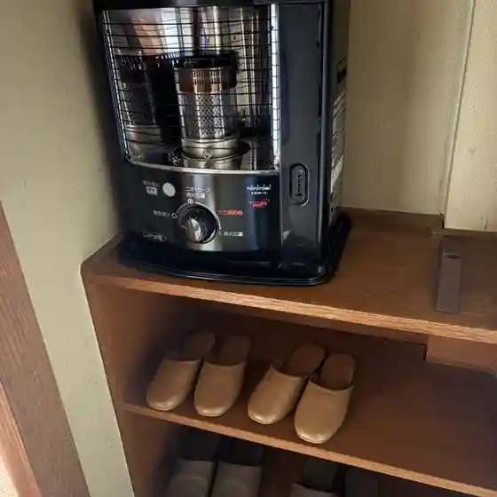

Erimo
Erimo · Hokkaido
Erimo
Highlighted on the Hokkaido map.

Stay
えりもの宿 田中旅館

Erimono Yado Tanaka Ryokan
クリフハウス・柳田旅館

Kurifuhausu Yanagida Ryokan
えりも観光館

Erimo Kankou Kan
Dining
さんすいかく

Sansuikaku
望洋荘

Bouyou Sou
味処一條

Ajidokoro Ichijou
ラーメンの百番 えりも店

Raamen No Hyaku Ban Erimo Mise
田中旅館

Tanaka Ryokan
こんぶ屋

Konbu Ya
クリフハウス・柳田旅館

Kurifuhausu Yanagida Ryokan
どんどん旅館

Dondon Ryokan
ファームイン 守人
Faamuin Moribito
えりも食品
Erimo Shokuhin
いさみ寿し
Isami Hisashi Shi
瓢六
Hyou Roku
えりも漁業協同組合 直売店
Erimo Gyogyou Kyoudoukumiai Chokubai Mise
駄菓子屋 夢
Dagashiya Yume
新井旅館
Arai Ryokan
えりも館
Erimo Kan
海産物直売店 えりも
Kaisanbutsu Chokubai Mise Erimo
げんき家
Genki Ie
コープさっぽろ えりも店
Koopu Sapporo Erimo Mise
えりも観光館
Erimo Kankou Kan
春香園
Haruka Sono
セイコーマート えりも店
Seikoomaato Erimo Mise
朋路
Tomo Michi
森と湖の里 ふれ愛館
Mori To Mizuumi No Sato Fure Ai Kan